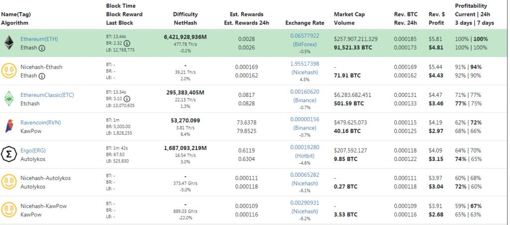

Điểm mạnh khi mining bằng 1050ti
Vấn đề hiệu năng của con 1050ti là vấn đề mà nhiều người muốn né nhưng lại có một số thế mạnh khác khi mining cho người mới. Nếu bạn là người mới, chưa có kinh nghiệm thì 1050ti khá tốt dành cho bạn.
1.Phù hợp cho người mới
Nếu bạn cảm thấy “mệt mỏi” khi phải mod BIOS cho từng con card một khi đào những giàn như Rx580 thì con 1050ti này khá hợp cho bạn. 1050ti không đòi hỏi kĩ năng phải thao tác chuyên nghiệp với máy tính, những thông số overclock đều có ở trên mạng cho từng thuật toán bạn muốn đào.
2.Dễ thanh lý về sau
Những giàn đào Rx580 thì nhiều nhưng 1050ti khá ít nên nếu mọi người dùng giàn 1050ti có thể dễ thanh lý về sau. Những vấn đề hỏng hóc cũng ít hơn khi bạn mua hàng cũ, vì 1050ti được dùng chủ yếu cho những người chơi game và phòng net, rất ít người dùng nó cho mining.
3.Phù hợp với nhiều thuật toán khác nhau
1050ti hỗ trợ gần như toàn bộ các thuật toán đang có hiện nay, từ Kawpow, ethash, equihash,… Có những dòng card như rx560 mặc dù công suất khá ok, điện thấp nhưng vấn đề là nó không hỗ trợ một số thuật toán để mọi người dễ dàng mining
Tóm Lại
1050ti có một số điểm mạnh nhưng có khá nhiều điểm yếu chết người, tui sẽ nêu chúng ở bài viết tiếp theo.